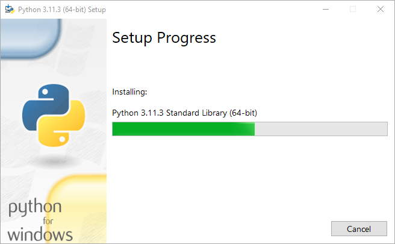
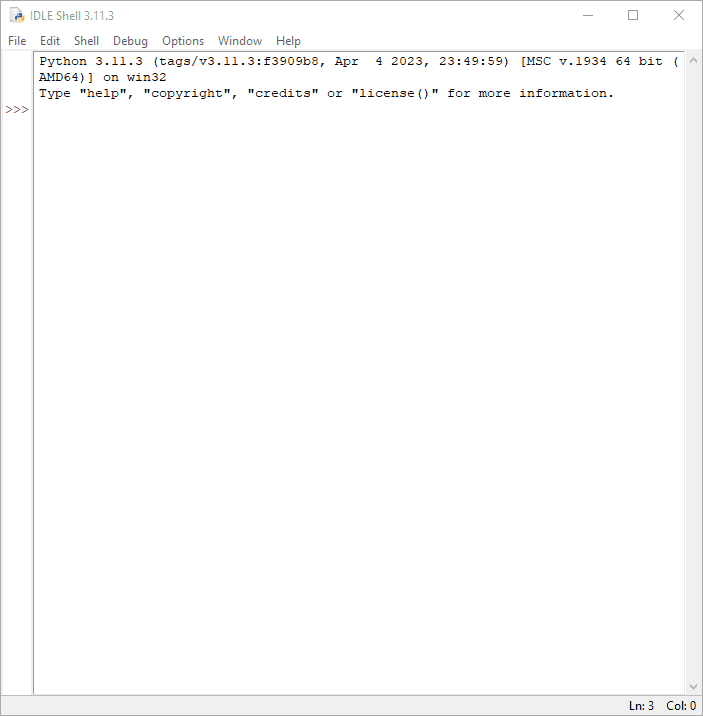

Instalando o Python 3 no Windows
Para instalar o Python no seu sistema operacional Windows, você precisa baixar o instalador. Acesse o site oficial neste link e clique em download, como mostrado abaixo.

Isso fará o download do Python 3 para sitemas 64 bits. Para o instalador de 32 bits, acesse e selecione o instalador de 32 bits apropriado, como mostrado abaixo.

Faça o download do instalador executável do Windows (32 ou 64 bits) e clique duas vezes nele para iniciar o assistente de instalação do python, como mostrado abaixo.

O processo de instalação é bem simples.
- Marque a opção "Add Python to PATH"
- Clique em "Install Now"
A tela abaixo será mostrada. Aguarde enquanto o instalador completa o processo de instalação.

Se tudo ocorrer bem, a próxima tela será mostrada. Clique em "Close".

Para verificar se a instalação do Python foi bem-sucedida, pesquise no menu iniciar por "cmd" e clique duas vezes para abri-lo.

Digite o seguinte comando: $ python --version Python 3.11.3
Este comando retornará a versão do python que está instalada em sua máquina. Agora digite:
$ pip --version
pip 22.3.1 from C:\Users\...\AppData\Local\Programs\Python\Python311\Lib\site-packages\pip (python 3.11)
Esse comando retornará a versão do pip que está instalada em sua máquina. O pip é o gerenciador de pacote do Python. Com ele você poderá adicionar novas funcionalidades ao seu Python.
IDLE
O IDLE (Ambiente de Desenvolvimento e Aprendizagem Integrado) é um ambiente de desenvolvimento integrado (IDE) para Python. O instalador do Python para Windows contém o módulo IDLE por padrão.
O IDLE pode ser usado para executar uma única instrução, como o Python Shell, e também para criar, modificar e executar scripts Python. O IDLE fornece um editor de texto completo para criar scripts Python que incluem recursos como destaque de sintaxe, preenchimento automático e recuo inteligente. Ele também possui um depurador com recursos de etapas e pontos de interrupção.
Para iniciar o shell interativo IDLE, procure o ícone IDLE no menu Iniciar e clique duas vezes nele.

Isso abrirá o IDLE, onde você pode escrever o código Python e executá-lo como mostrado abaixo.

Parabéns, agora o Python, o pip e o Idle já estão instalados em seu sistema Windows.
Happy Hacking! ^-^